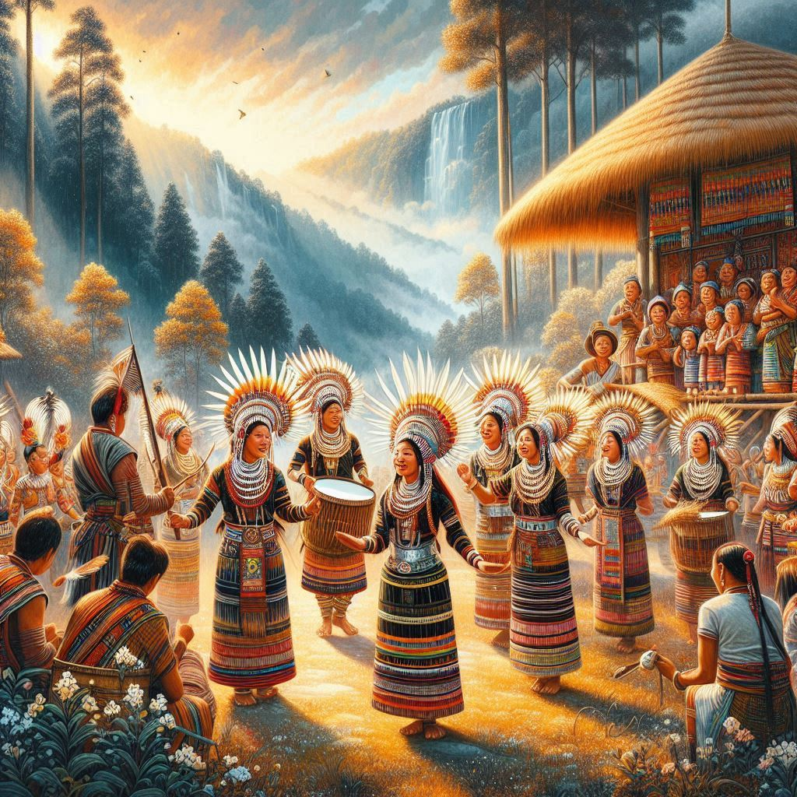
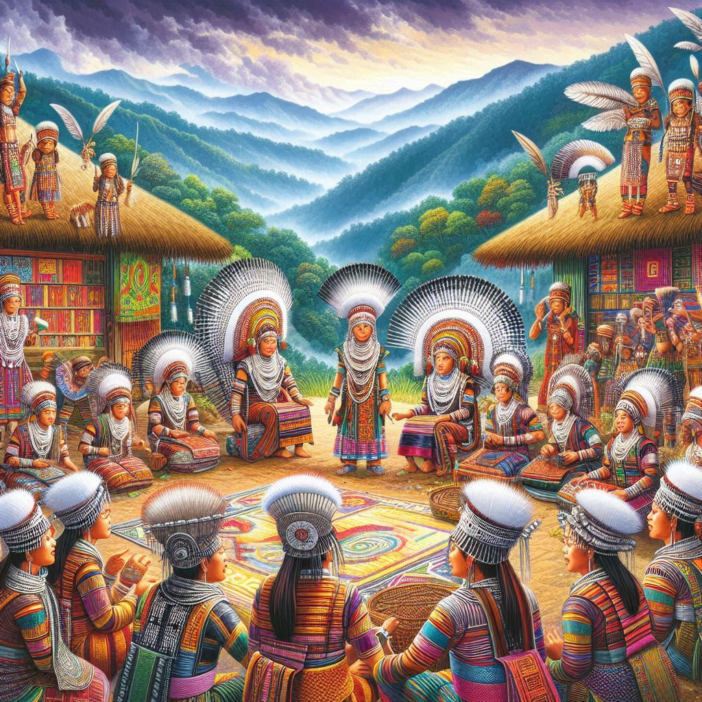

1. Tradition of Meghalaya
Meghalaya, known for its scenic beauty and diverse cultural heritage, has rich and unique traditions that
reflect the customs, beliefs, and lifestyle of its indigenous communities. The people of Meghalaya,
primarily from the Khasi, Garo, and Jaintia tribes, continue to practice customs passed down through
generations, which are deeply intertwined with nature, spirituality, and social values. Below are some
significant traditional aspects of the state:
2. Matrilineal Society
One of the most distinctive features of Meghalaya's traditions is its matrilineal system,
especially among the Khasi and Jaintia tribes. In this system, lineage and inheritance are traced through
the mother rather than the father. The youngest daughter, known as the "khatduh," inherits the family
property and wealth, and the family's name is passed down through her. This practice gives women a
significant role in both family and societal affairs, and they are seen as the primary decision-makers in
households.
3. Festivals and Celebrations
Meghalaya's festivals are deeply connected to the agricultural calendar and religious beliefs, often
featuring vibrant dance, music, and rituals. Some of the key traditional festivals include:
- Nongkrem Dance Festival: Celebrated by the Khasi tribe, this festival is dedicated
to the goddess Ka Blei Synshar, asking for a good harvest and prosperity. It involves traditional
dance, music, and feasts.
- Behdienkhlam: This festival is celebrated by the Jaintia tribe and marks the end of
the monsoon season. It is a time of thanksgiving to the divine for a bountiful harvest, and it
includes unique rituals, songs, and dances.
- Wangala Festival: Celebrated by the Garo tribe, this festival is held in honor of
the Sun God, Misi Saljong. It involves traditional dances and offerings, marking the end of the
harvest season.


4. Traditional Music and Dance
Music and dance are integral parts of Meghalaya's cultural traditions. The people of Meghalaya express their
stories, beliefs, and emotions through various forms of traditional music:
- Nongkrem Dance: A traditional dance performed during the Nongkrem festival, where
dancers dressed in vibrant costumes offer prayers for prosperity and harvest.
- Wangala Dance: This is a major cultural expression of the Garo tribe, characterized
by lively dances with traditional drumming. The dance symbolizes gratitude for a good harvest.
- Phralai Dance: Performed by the Jaintia tribe, this dance is done during the
Behdienkhlam festival and involves energetic movement and rhythm, celebrating the harvest.
Traditional musical instruments such as
Dumchani,
Sarinda,
Sambal, and
Pung are
used during festivals and rituals to enhance the music and dance performances.
5. Traditional Attire
The traditional clothing of the people of Meghalaya is vibrant and intricately designed. Clothing varies
slightly between the different tribes, but it often includes the use of bright colors, handwoven fabrics,
and distinctive patterns.
- Khasi Dress: For women, the traditional attire is a jainsem, a two-piece
garment with a long, flowing design, usually in vibrant colors like red, green, and black. The Khasi
men traditionally wear a simple yet elegant attire, consisting of a white dhoti and a shirt.
- Garo Dress: Garo women wear a traditional rida, a handwoven garment, often
paired with a jacket, while the men wear a gando (a traditional shirt) and dhoti.
- Jaintia Dress: The traditional dress of the Jaintia people is similar to that of
the Khasi tribe, with women wearing jainsem and men donning dhoti or lungi.
6. Religion and Spirituality
Meghalaya is predominantly Christian today, but the indigenous tribes have retained a strong connection with
animism and nature worship. In addition to Christian practices, many tribes continue to hold traditional
beliefs, especially the Khasi, who believe in a Supreme Being,
U Blei, and various nature spirits.
- Sacred Groves: The people of Meghalaya, especially the Khasi, Garo, and Jaintia,
believe in preserving sacred groves as places of worship. These groves are considered home to
deities and spirits and are protected by the community.
- Rituals and Offerings: Traditional rituals involve offerings to the spirits and
gods of nature, seeking blessings for good harvests, health, and prosperity. These offerings often
include sacrifices of livestock like chickens, goats, and buffaloes.
7. Community Life and Social Structure
Community life in Meghalaya revolves around close-knit family units and clans. Social gatherings are an
essential part of life, where people come together to celebrate life events, share food, and strengthen
communal bonds.
- Matrilineal Clan System: The Khasi, Jaintia, and Garo tribes maintain distinct clan
systems. Each clan has its own traditions and customs, and the relationships within these clans are
essential to the tribe's social structure.
- Community Councils: The tribes of Meghalaya maintain traditional systems of
governance. The Khasi and Jaintia tribes, for example, have the Dorbar, a traditional council
of elders, who resolve disputes and ensure that customs and laws are followed.
8. Traditional Arts and Crafts
Handicrafts in Meghalaya are closely linked with the culture and daily life of its people. The traditional
crafts include:
- Shawls and Woolen Garments: The Garo and Khasi tribes are known for their intricate
weaving techniques used to make shawls, blankets, and other clothing items.
- Bamboo Crafts: Meghalaya’s people also craft beautiful items from bamboo, including
baskets, mats, furniture, and even musical instruments.
- Wood Carving: Many local artisans carve wooden figures and household items, often
depicting animals, deities, and everyday life.
9. Conclusion
Meghalaya’s traditions are deeply connected to its people’s respect for nature, their vibrant festivals, and
their close-knit community structures. The state’s unique matrilineal society, coupled with its rich
cultural practices, makes it one of India’s most fascinating regions, where traditions continue to thrive
and shape the lives of its people.